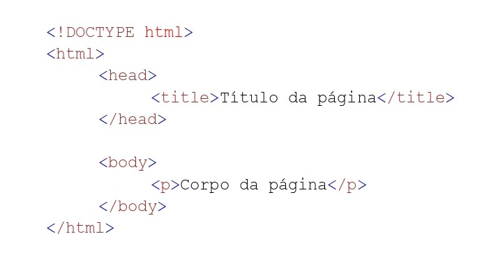

Você pode utilizar essas ferramentas para desenvolver o HTML
O Inspetor de Elemento é uma ferramenta, onde você pode inspencionar o html das páginas na web e alterar os elementos, disponibilizadas pelo navegadores:

Os títulos de HTML são definidos com a tag h1 para h6.
Outras tags definidas no HTML
| h1 | p | br | img | strong | i |
| Usado para títulos | Usado para paragráfos | Usado para fazer uma quebra de linha | Usada para incorporar um imagem | Deixa o texto em negrito | Deixa o texto em itálico/td> |